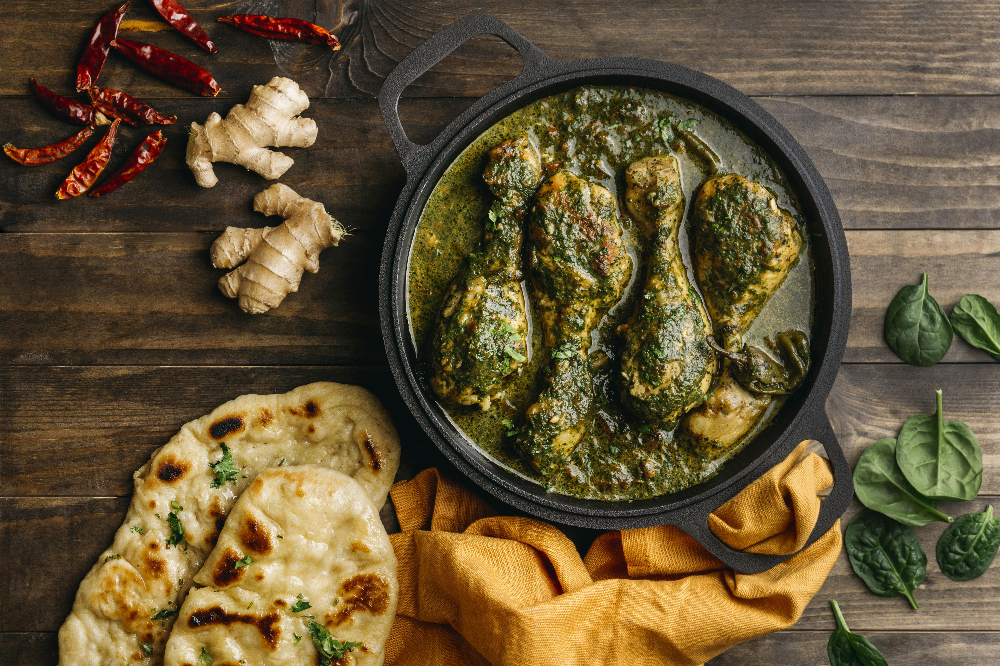

Odin Recipes
no fluff, just recipes

IDLI
Idli is one of the most healthiest and popular South Indian breakfast dish. These are soft, light, fluffy steamed round cakes made with a ground, fermented rice and lentil batter. Here I share my foolproof recipe with video and step-by-step photos that will help you in making the best idli. This Idli recipe is one of the earliest recipe from the blog which has been tried and tested with great results by many of our readers.

MUTTON KULAMBU
One of the most requested recipe in YUMMY TUMMY is a proper mutton kulambu. I have been getting request for that from so many viewers. Last week I decided to give it a try. I made for my sister and we had an awesome lunch.I pressure cooked mutton pieces with all the spices and a thick masala, this made the mutton so meltingly tender. If you have got a little time, let the gravy sit for a while so that the flavours will meld together and taste even more delicious. I served it with plain rice, but this taste equally delicious with aapam, idiappam, roti and paratha.

THALAI VAZHAI ILAI VIRUNDHU
The banana leaf is the leaf of the banana plant, which may produce up to 40 leaves in a growing cycle. The leaves have a wide range of applications because they are large, flexible, waterproof and decorative. They are used for cooking, wrapping, and food-serving in a wide range of cuisines in tropical and subtropical areas. They are used for decorative and symbolic purposes in numerous Hindu and Buddhist ceremonies. In traditional homebuilding in tropical areas, roofs and fences are made with dry banana-leaf thatch.Bananas and palm leaves were historically the primary writing surfaces in many nations of South and Southeast Asia.
CHICKEN KUZHAMBU
Spicy and flavourful chicken curry or kuzhambu recipe which is perfect to enjoy with some hot rice or some rotis. It can be had with appam, idiappam and parota too.This kuzhambu is a basic recipe which can be enjoyed with many of your main dishes. I make this often for lunch and it taste so delicious with plain rice.